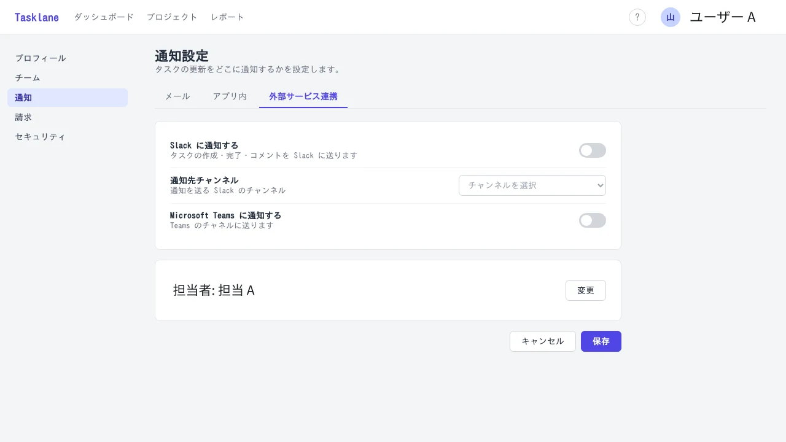
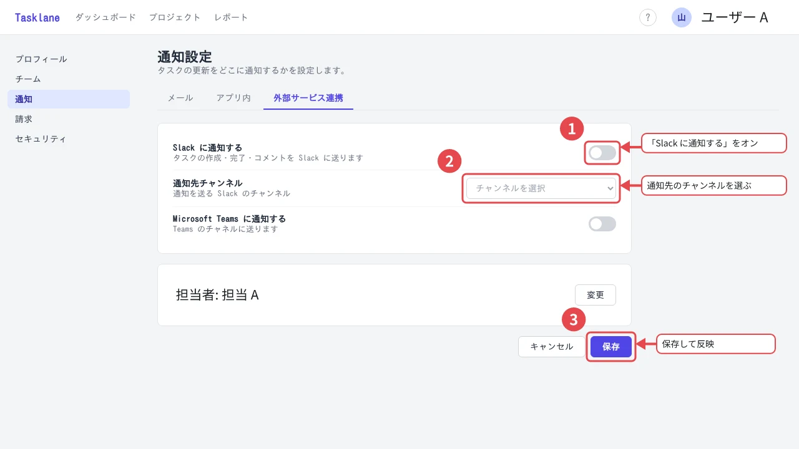
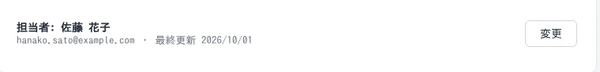
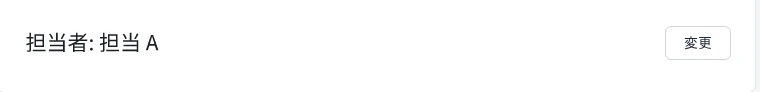

補足の提案
たとえば「Slack 通知の設定方法を説明したい」と書くと、どこを囲んで何と書くかを AI が下書きします。下書きは 1 つずつ、採用するか、却下するか、手直しするかを選べます。Chrome 拡張で撮った画像なら、ページ上の要素の位置に合わせて枠を置きます。
使うには OpenRouter で接続するか、Anthropic の API キーを設定します。画像を送る前には必ず確認が出て、キーはお使いのブラウザの中にだけ保存されます。
SaaS の利用ガイドをつくる人へ
スクリーンショットに枠や番号、説明を書き込んで、ふつうの JPEG / PNG として保存できます。どこにでも貼れて、あとで Harie で開けば枠も文字も何度でも直せます。
無料のオープンソース（MIT）です。インストールも登録もいりません。


担当者によって、書き方もばらばらになりがちです。
AI が、囲む場所と説明文を下書きします撮って、開いて、書き込んで、書き出す。これを 1 枚ずつやることになります。
撮ったページに、そのまま書き込めますボタンの名前が変わっただけで、画像を一から作り直します。前任者の画像だと、元のデータすら見つかりません。
画像を開けば、誰でもその場で直せます本番の画面には、お客さまの名前やメールアドレスが並んでいます。
ダミーの値に置き換えて、元に戻せない形で消します撮るところから保存するところまで、Harie だけで済みます。
Chrome 拡張を使えば、いま開いているページを撮って、そのままエディタで開けます。撮る範囲は、画面に見えている部分、ドラッグで囲んだ部分、ボタンなどの要素 1 つから選べます。
枠や矢印、番号、吹き出し、スポットライトで説明を書き込みます。何を説明したいかを伝えれば、番号付きの枠と説明文を AI が下書きしてくれます。
保存されるのはふつうの JPEG / PNG です。ヘルプページにそのまま貼れて、あとで誰が開いても注釈を直せます。
保存したあとも直せるわけ
Harie で保存した画像には、表示用の画像と一緒に、元のスクリーンショットと注釈のデータが入っています。ほかのアプリやブラウザで開くと、ふつうの画像として表示されます。
Harie で開けば、枠や文字を 1 つずつ動かしたり書き換えたりできます。プロジェクトファイルを別に取っておく必要はありません。画像を受け取った人も、そのまま開いて直せます。
保存し直しても元のスクリーンショットは再圧縮しないので、何度直しても画質は落ちません。ファイル形式の仕様も公開しています。
| 画像編集ツールで書き出し | 手順書作成サービス | Harie | |
|---|---|---|---|
| ヘルプページにそのまま貼れる | ○ | サービスから書き出す | ○ |
| 貼った画像の文言をあとで直せる | 元のプロジェクトファイルがあれば | サービスの中でなら | ○ 画像を開くだけ |
| 作った人以外が直せる | ファイルを受け渡せば | 同じ契約のメンバーなら | ○ 画像を渡すだけ |
| アカウント・契約が要らない | ツールによる | 要る | ○ |
AI
たとえば「Slack 通知の設定方法を説明したい」と書くと、どこを囲んで何と書くかを AI が下書きします。下書きは 1 つずつ、採用するか、却下するか、手直しするかを選べます。Chrome 拡張で撮った画像なら、ページ上の要素の位置に合わせて枠を置きます。
使うには OpenRouter で接続するか、Anthropic の API キーを設定します。画像を送る前には必ず確認が出て、キーはお使いのブラウザの中にだけ保存されます。
MCP サーバー @harie/mcp を登録しておけば、Claude Code や Claude Desktop に頼むだけで注釈を付けたり直したりできます。UI の文言が変わったときも、関係する画像をまとめて直せます。
guides の通知設定の画像で、「保存して反映」を「更新して反映」に直して
harie_open → harie_edit
吹き出し 3 の文言を直して上書き保存しました。
個人情報
氏名やメールアドレス、電話番号などを、ダミーの値に置き換えられます。ぼかしと違って、どんな項目が並んだ画面なのかは読む人にきちんと伝わります。塗りつぶし、モザイク、ぼかしも選べます。
加工は元の画像そのものにかけるので、あとから元に戻すことはできません。そのぶん、ファイルを人に渡しても、加工前の値が中に残ることはありません。


どこで保存しても、できあがるファイルも見た目も同じです。
MCP の始め方
MCP サーバー @harie/mcp を登録すると、Claude Code や Claude Desktop から Harie の画像を開いて、注釈を付けたり直したりできるようになります。
ターミナルで次のコマンドを実行します。
claude mcp add harie -- npx -y @harie/mcp --root ~/Pictures/guides
claude_desktop_config.json に次の設定を足して、Claude Desktop を再起動します。フォルダのパスは、ご自分の環境に合わせて書き換えてください。
{
"mcpServers": {
"harie": {
"command": "npx",
"args": ["-y", "@harie/mcp", "--root", "/Users/you/Pictures/guides"]
}
}
}
npx が npm から取ってきて動かすので、ほかに入れるものはありません。--root には、注釈を付けたい画像を置くフォルダを指定します。サーバーが読み書きできるのは、このフォルダの中だけです。settings.png を Harie ファイルにして、保存ボタンを赤枠で囲み、「ここで保存します」と吹き出しを付けて
guides の画像で、メールアドレスが映っているところをダミーに置き換えて
個人情報の加工は元に戻せないので、確認が取れたときだけ保存します。